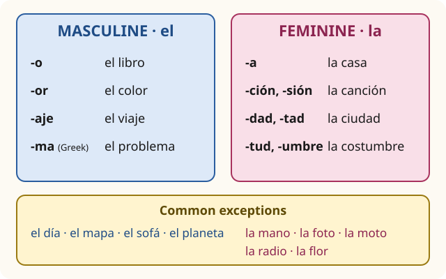

Lesson 4: Nouns, Gender and Articles¶
Los sustantivos, el género y los artículos
Every Spanish noun is either masculine or feminine. A book is masculine, a table is feminine, a problem is masculine and a hand is feminine. This has nothing to do with the things themselves; it is a grammatical class, like the classes of nouns in many other languages, and it decides the form of the words around the noun: the word for "the", the word for "a", and the adjectives. The good news is that the ending of a noun tells you its gender most of the time. In this lesson you learn the rules, the common exceptions, how to make nouns plural, the articles, and the very useful word hay, "there is, there are".
Learning outcomes
By the end of this lesson you will be able to:
- tell the gender of most nouns from their ending, and remember the common exceptions;
- make nouns plural, including the spelling and accent changes;
- use the definite articles el, la, los, las and the indefinite articles un, una, unos, unas;
- use the contractions al and del, and the rule of el agua;
- say what there is in a room with hay, and name everyday objects at home and in class.
masculinefeminineplural
4.1 Dialogue: a new flat¶
Daniel has just moved into a small flat in Salamanca. Lucía comes to see it.
- Lucía: ¡Hola, Daniel! ¡Qué bonito es el piso! — Hi, Daniel! What a lovely flat!
- Daniel: Gracias. Es pequeño, pero la cocina es grande. — Thanks. It's small, but the kitchen is big.
- Lucía: ¿Cuántas habitaciones hay? — How many rooms are there?
- Daniel: Hay dos habitaciones, un baño, una cocina y un salón. — There are two bedrooms, a bathroom, a kitchen and a living room.
- Lucía: ¿Y esta es tu habitación? — And is this your room?
- Daniel: Sí. Hay una cama, una mesa, una silla y unos libros. — Yes. There's a bed, a table, a chair and some books.
- Lucía: ¡Y el mapa de España en la pared! ¿Y las fotos? — And the map of Spain on the wall! And the photos?
- Daniel: Son las fotos de mi familia. Y esa es la guitarra de mi hermano. — They're photos of my family. And that's my brother's guitar.
- Lucía: ¿Hay un sofá en el salón? — Is there a sofa in the living room?
- Daniel: No, no hay sofá. Hay dos sillas y una lámpara. — No, there's no sofa. There are two chairs and a lamp.
- Lucía: ¡Es un piso de estudiante! — It's a student flat!
- Daniel: Sí, pero el problema es la ventana: no hay luz por la mañana. — Yes, but the problem is the window: there's no light in the morning.
Notice:
- The word for "the" changes: el piso, la cocina, las fotos. So does the word for "a": un baño, una cama.
- Most masculine nouns end in -o and most feminine nouns in -a, but not all: el mapa and el problema are masculine, la foto is feminine.
- hay means both "there is" and "there are", and it never changes.
4.2 Vocabulary: at home and in class¶
At home¶
| Spanish | Sounds like | English |
|---|---|---|
| la casa | [lah KAH-sah] | the house, home |
| el piso | [ehl PEE-soh] | the flat, apartment (Spain); also the floor, storey |
| la habitación | [lah ah-bee-tah-SYOHN] | the room; the bedroom |
| la cocina | [lah koh-SEE-nah] | the kitchen; also the cooker |
| el baño | [ehl BAH-nyoh] | the bathroom |
| el salón | [ehl sah-LOHN] | the living room |
| la cama | [lah KAH-mah] | the bed |
| el sofá | [ehl soh-FAH] | the sofa |
| la lámpara | [lah LAHM-pah-rah] | the lamp |
| la puerta | [lah PWEHR-tah] | the door |
| la ventana | [lah behn-TAH-nah] | the window |
| la pared | [lah pah-REHD] | the wall (inside) |
| el espejo | [ehl ehs-PEH-hoh] | the mirror |
| la nevera | [lah neh-BEH-rah] | the fridge |
| la llave | [lah YAH-beh] | the key |
| la televisión | [lah teh-leh-bee-SYOHN] | the television (often la tele) |
Table 4.1. At home. The words are given with their article: learn them that way.
In class¶
| Spanish | English |
|---|---|
| el libro | the book |
| el cuaderno | the exercise book, notebook |
| el bolígrafo | the pen (often el boli in Spain) |
| el lápiz | the pencil |
| la goma | the rubber, eraser |
| la mesa | the table, desk |
| la silla | the chair |
| la pizarra | the board (el pizarrón in much of Latin America) |
| la mochila | the backpack, school bag |
| el diccionario | the dictionary |
| el ordenador | the computer (Spain) |
| la computadora | the computer (Latin America) |
| el móvil | the mobile phone (Spain) |
| el celular | the mobile phone (Latin America) |
| el aula | the classroom (feminine: see section 4.4) |
Table 4.2. In class. Several everyday words differ between Spain and Latin America; both are understood everywhere.
Learn the noun with its article
Never learn mesa on its own: learn la mesa. Make flashcards with the article, or colour the masculine words blue and the feminine words pink, as this book does. The article carries the gender, and it will save you guessing later.
4.3 Grammar: masculine and feminine nouns¶
The main rule¶
Nouns ending in -o are masculine; nouns ending in -a are feminine. This covers a large part of the dictionary:
- masculine: el libro, el piso, el baño, el vaso, el perro
- feminine: la casa, la mesa, la ventana, la playa, la ciudad
Other endings that tell you the gender¶
| Ending | Gender | Examples |
|---|---|---|
| -ción, -sión | feminine | la canción, la estación, la televisión |
| -dad, -tad, -tud | feminine | la ciudad, la universidad, la libertad, la juventud |
| -umbre | feminine | la costumbre |
| -or | usually masculine | el color, el ordenador, el amor (but la flor) |
| -aje | masculine | el viaje, el garaje, el mensaje |
| -ma (from Greek) | masculine | el problema, el idioma, el tema, el programa, el sistema, el clima |
Table 4.3. Endings that show the gender.

The -ma rule needs care. Words that came into Spanish from Greek and end in -ma are masculine: el problema, el programa, el idioma ("the language"). Ordinary words ending in -ma are feminine as usual: la cama, la goma, la forma. You cannot always tell the origin, so learn the common -ma masculines as a list.
The exceptions to learn now¶
A handful of very common words break the -o / -a rule:
| Masculine, ending in -a | Feminine, ending in -o |
|---|---|
| el día — the day | la mano — the hand |
| el mapa — the map | la foto — the photo (short for la fotografía) |
| el sofá — the sofa | la moto — the motorbike (short for la motocicleta) |
| el planeta — the planet | la radio — the radio |
Table 4.4. Common exceptions. La foto and la moto are feminine because they are short for feminine words.
Nouns ending in -e or a consonant¶
For nouns ending in -e or in most consonants, the ending gives no reliable clue. Learn each one with its article:
- masculine: el coche, el café, el hotel, el reloj, el lápiz, el autobús, el pan
- feminine: la noche, la clase, la calle, la llave, la luz, la pared, la sal
Nouns for people¶
For people (and many animals), the gender follows the person:
- -o / -a: el chico / la chica (boy / girl), el amigo / la amiga, el hermano / la hermana.
- Consonant + a: el profesor / la profesora, el señor / la señora.
- One form, two articles. Nouns in -ista, many in -e and -nte do not change; only the article shows the gender: el estudiante / la estudiante, el turista / la turista, el artista / la artista, el policía / la policía.
- Different words: el padre / la madre, el hombre / la mujer, el rey / la reina.
Changing usage
Some job titles traditionally used one form for both sexes, and today a feminine form is normal: la presidenta, la jefa ("the boss"), la médica (alongside la médico). You will hear both; the forms in -a are now widely accepted.
4.4 Grammar: articles, plurals, al and del, and hay¶
The articles¶
| Masculine | Feminine | English | |
|---|---|---|---|
| definite, singular | el libro | la mesa | the |
| definite, plural | los libros | las mesas | the |
| indefinite, singular | un libro | una mesa | a, an |
| indefinite, plural | unos libros | unas mesas | some, a few |
Table 4.5. The articles. Switch on Practice and fill them in.
Three differences from English:
- "The" for things in general. Spanish uses the definite article for things in general, where English uses none: Me gusta el café ("I like coffee"), Los gatos son independientes ("Cats are independent").
- No article with jobs after ser. Soy estudiante, "I am a student", without un (Lesson 5).
- Unos, unas mean "some" or "a few", and often "about" with numbers: unos libros ("some books"), unos veinte euros ("about twenty euros"). Often the article is left out altogether: Hay libros en la mesa ("There are books on the table").
Plurals¶
| Rule | Singular | Plural |
|---|---|---|
| vowel: add -s | el libro, la casa, el café | los libros, las casas, los cafés |
| consonant: add -es | el hotel, la ciudad, la flor | los hoteles, las ciudades, las flores |
| -z: change to -ces | el lápiz, la luz, la vez | los lápices, las luces, las veces |
| accent dropped | la canción, el autobús, el inglés | las canciones, los autobuses, los ingleses |
| accent added | el joven, el examen | los jóvenes, los exámenes |
| unstressed -s: no change | el lunes, la crisis | los lunes, las crisis |
Table 4.6. Making nouns plural.
The accent changes are not extra rules to memorise: they follow from the stress rules of Lesson 1. The stress of the word stays on the same syllable; adding a syllable moves that syllable to a different position, so the written accent may become unnecessary (can-CIÓN → can-CIO-nes) or necessary (JO-ven → JÓ-ve-nes).
A masculine plural can cover a mixed group: los padres is "the parents" (father and mother), los hermanos is "the brothers" or "the brothers and sisters", los chicos can be "the boys" or "the kids".
El agua: feminine nouns that take el¶
Feminine nouns that begin with a stressed a- or ha- take el and un in the singular, simply because la agua would run the two a sounds together:
- el agua (water), el aula (classroom), el hambre (hunger), el águila (eagle), un arma (a weapon).
The nouns are still feminine. Adjectives are feminine, and the plural goes back to las: el agua fría ("the cold water"), las aulas ("the classrooms"). When the first a is not stressed, the rule does not apply: la amiga, la habitación.
Al and del¶
Two little words join with el:
- a + el = al: Voy al cine. — I'm going to the cinema.
- de + el = del: la puerta del baño — the bathroom door (the door of the bathroom)
They are compulsory: never write a el or de el before a noun. But nothing joins with la, los or las: a la playa, de los chicos. And there is no contraction with the pronoun él ("he") or with El in a proper name: el libro de él, Soy de El Salvador.
Spanish has no apostrophe s. "My brother's guitar" is la guitarra de mi hermano, "the guitar of my brother"; "the teacher's book" is el libro del profesor.
Hay: there is, there are¶
hay [eye, like English I] means "there is" and "there are". It has one form only.
- with a singular noun, use un or una: Hay una farmacia en la calle. — There's a chemist's in the street.
- with a plural noun, usually no article: Hay libros en la mesa. — There are books on the table.
- with a number or quantity word: Hay tres sillas. Hay muchos estudiantes.
- with things you cannot count, no article: Hay agua en la nevera. — There's water in the fridge.
- questions: ¿Hay un baño aquí? ¿Cuántas sillas hay?
- negatives, usually without un or una: No hay sofá. No hay leche.
Common mistake: hay with el or la
hay introduces something new, so it does not go with el, la, los or las. "There's the book on the table" is not hay el libro. To say where a particular thing is, use está: El libro está en la mesa. Lesson 5 compares the two.
Worked example: describing a room
Describe a classroom with one board, twelve chairs, a big table and no computer.
- One board: la pizarra is feminine, so Hay una pizarra.
- Twelve chairs: number, no article: Hay doce sillas.
- A big table: Hay una mesa grande. (the adjective follows the noun)
- No computer: No hay ordenador. (or computadora in Latin America)
All together: En el aula hay una pizarra, doce sillas y una mesa grande, pero no hay ordenador.
4.5 Practice¶
Gender¶
Say each noun with el or la, then check.
| Noun | With its article | Why |
|---|---|---|
| ventana | la ventana | -a |
| problema | el problema | -ma from Greek |
| canción | la canción | -ción |
| mano | la mano | exception |
| día | el día | exception |
| ciudad | la ciudad | -dad |
| viaje | el viaje | -aje |
| agua | el agua | stressed a-: el, but feminine |
| idioma | el idioma | -ma from Greek |
| foto | la foto | short for la fotografía |
Table 4.7. Practice: el or la?
What is there in your room?¶
Read the description aloud, then describe your own room in the same way.
- En mi habitación hay una cama, una mesa y dos sillas. — In my room there's a bed, a table and two chairs.
- En la mesa hay un ordenador, unos libros y una lámpara. — On the table there's a computer, some books and a lamp.
- En la pared hay un mapa y unas fotos. — On the wall there's a map and some photos.
- No hay televisión. — There's no television.
Say it
Look around the room you are in and say five sentences with hay and one with no hay. For example:
Hay una puerta y dos ventanas. Hay un sofá. Hay unos libros en la mesa. No hay espejo.
4.6 Culture: one language, many words for home¶
Flats and rooms. The everyday word for a flat is el piso in Spain, el departamento in Mexico, Argentina, Chile and Peru, and el apartamento in Colombia, Venezuela and the Caribbean (it is also understood in Spain). A bedroom is la habitación or el dormitorio in Spain, el cuarto in much of Latin America, and la recámara in Mexico.
The fridge, the pen and the car. Everyday objects have the most regional names, because each country named them as they arrived. The fridge is la nevera or el frigorífico in Spain, el refrigerador in Mexico and la heladera in Argentina. A ballpoint pen is el bolígrafo in Spain, la pluma in Mexico and la birome in Argentina. A car is el coche in Spain, el carro in Mexico, Colombia and Central America, and el auto in Argentina and Chile. None of these differences stops people understanding each other: they are like flat and apartment, or lift and elevator, in English.
Floors. In Spain a block of flats starts at la planta baja (the ground floor); el primer piso is the floor above it, as in British English. An address such as Calle Mayor 5, 3.º B means number 5, third floor, door B. In much of Latin America, buildings are counted the American way, and the ground floor is el primer piso.
Welcome to my home. When you visit someone, you may hear Estás en tu casa ("You're in your own home") or, in Mexico, Mi casa es su casa ("My house is your house"). They are friendly formulas of welcome; the polite answer is simply Muchas gracias.
4.7 Summary¶
Summary
- Gender: nouns in -o are usually masculine, nouns in -a usually feminine. Feminine: -ción, -sión, -dad, -tad, -tud. Masculine: -or, -aje, and Greek words in -ma (el problema, el idioma).
- Exceptions: el día, el mapa, el sofá; la mano, la foto, la moto, la radio. Learn nouns in -e and consonants with their article.
- People: el chico / la chica, el profesor / la profesora, el / la estudiante.
- Articles: el, la, los, las (the); un, una, unos, unas (a, some).
- Plurals: vowel + s; consonant + es; -z → -ces; accents follow the stress rules (canciones, jóvenes).
- el agua: feminine nouns starting with stressed a- take el in the singular, but stay feminine.
- al, del: a + el = al, de + el = del. Possession: el libro de Ana.
- hay: "there is / there are", one form; with un/una, numbers or no article, never with el/la.
4.8 Exercises¶
Exercise 1
Give the definite article: ___ problema.
Answer
el. el problema. Greek words in -ma are masculine.
Exercise 2
Give the definite article: ___ mano.
Answer
la. la mano. A common exception: feminine, though it ends in -o.
Exercise 3
Give the plural of el lápiz.
Answer
los lápices. los lápices. Final -z becomes -c before -es.
Exercise 4
Give the plural of la estación.
Answer
las estaciones. las estaciones. The written accent is no longer needed.
Exercise 5
Give the plural of el joven.
Answer
los jóvenes. los jóvenes. The stress stays on the same syllable, which is now third from the end, so it needs an accent.
Exercise 6
Complete with al or del: la puerta ___ salón.
Answer
del. la puerta del salón. de + el = del.
Exercise 7
Translate: "There is cold water in the fridge." (cold: fría)
Answer
Hay agua fría en la nevera. Hay agua fría en la nevera. No article after hay with water, and the adjective is feminine.
Exercise 8
Put un or una before each noun: (a) ___ mapa; (b) ___ ciudad; (c) ___ hotel; (d) ___ foto; (e) ___ aula; (f) ___ estudiante (a woman).
Answer
(a) un mapa; (b) una ciudad; (c) un hotel; (d) una foto; (e) un aula (feminine, but un before stressed a-); (f) una estudiante.
Exercise 9
Correct the mistakes: Hay el libro en la mesa. Es el libro de el profesor.
Answer
El libro está en la mesa. Es el libro del profesor. (Or, for a book that is new to the conversation: Hay un libro en la mesa.) De + el must contract to del.
Exercise 10
Translate: "My sister's room has two windows and a big mirror." Use tiene ("has") and grande ("big").
Answer
La habitación de mi hermana tiene dos ventanas y un espejo grande.
4.9 Quiz¶
Quiz: nouns, gender and articles
Exercise 11
___ idioma
- el
- la
- los
- las
Answer
el
idioma is one of the masculine Greek words in -ma.
Exercise 12
Which noun is feminine?
- mapa
- día
- foto
- sofá
Answer
foto
la foto is short for la fotografía. The others are masculine.
Exercise 13
Hay tres ___ en la mesa. (lápiz)
Answer
lápices / lapices
-z becomes -ces in the plural.
Exercise 14
Voy ___ cine y después a ___ playa.
Answer
al · la
a + el = al; a + la does not contract.
Exercise 15
Give the plural, with its article: la canción.
Answer
las canciones
Exercise 16
Match each noun to the right article.
| A | B |
|---|---|
| problema | los |
| ciudad | las |
| lunes | el |
| aulas | la |
Answer
problema — el; ciudad — la; lunes — los; aulas — las
Exercise 17
Tap the wrong word.
En mi salón hay el sofá y dos sillas.
Answer
Wrong word: el.
Corrected: En mi salón hay un sofá y dos sillas.
hay is not used with the definite article; use un.
Exercise 18
Put the words in order: "There is a map on the wall."
Words: Hay / en / un / mapa / pared. / la
Answer
Hay un mapa en la pared.
Exercise 19
Write what you hear.
Dictation. Have someone read the sentence aloud, then write it down.
En la cocina hay una mesa y cuatro sillas.
Answer
En la cocina hay una mesa y cuatro sillas.